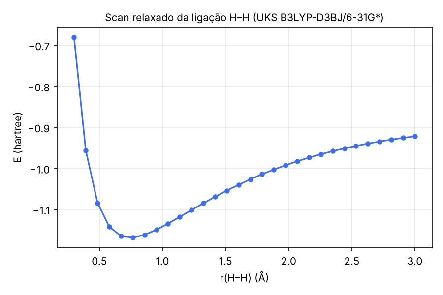
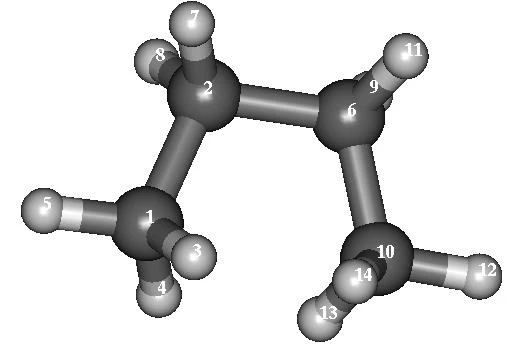
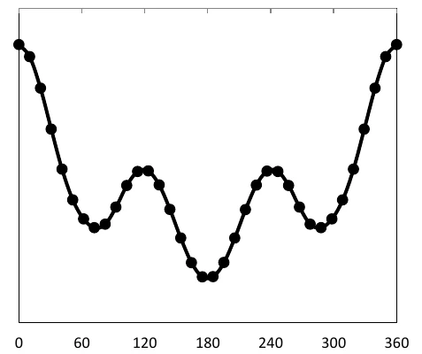

Superfície de energia potencial
Scan de uma ligação: H₂
Vamos construir uma superfície de energia potencial (SEP) variando o comprimento da ligação H–H do hidrogênio.
- Desenhe o H₂ e ajuste a estrutura com mecânica molecular (MM).
- Faremos um scan relaxado: só a coordenada escolhida (ligação, ângulo ou diedro) fica fixa em cada etapa, e as demais coordenadas são otimizadas. Use o seguinte modelo de input:
! Opt UKS B3LYP D3BJ TIGHTSCF 6-31G*
%geom Scan
B 0 1 = 0.3, 3.0, 30
end
end
* xyz 0 1
H 0.0 0.0 0.4
H 0.0 0.0 -0.4
*O novo bloco %geom Scan … end end define o scan: o comprimento de ligação (símbolo B) entre os átomos 0 (H) e 1 (H)
varia de 0,3 Å a 3,0 Å em 30 etapas. No ORCA, os átomos são numerados a partir de 0: 0, 1, 2, …, n para a primeira, segunda, terceira, …, (n+1)-ésima linha.
Note também a palavra UKS, que indica DFT não restrito: ao esticar a ligação, a molécula tende a dois átomos de H com um elétron desemparelhado cada, e só um cálculo não restrito descreve essa região da curva.
Os resultados estão no fim da saída: na primeira coluna, o valor da coordenada; na segunda, a energia (hartree).
RELAXED SURFACE SCAN RESULTS
----------------------------
Column 1: NONAME
The Calculated Surface using the 'Actual Energy'
0.30000000 -0.68031401
0.39310345 -0.95624590
0.48620690 -1.08398111
0.57931034 -1.14221500
0.67241379 -1.16490752
0.76551724 -1.16853681
0.85862069 -1.16183615
0.95172414 -1.14957596
1.04482759 -1.13441033
1.13793103 -1.11801144
1.23103448 -1.10132813
1.32413793 -1.08491343
1.41724138 -1.06909123
1.51034483 -1.05404114
1.60344828 -1.03985844
1.69655172 -1.02658641
1.78965517 -1.01423662
1.88275862 -1.00279925
1.97586207 -0.99224774
2.06896552 -0.98254619
2.16206897 -0.97365141
2.25517241 -0.96551476
2.34827586 -0.95808628
2.44137931 -0.95131550
2.53448276 -0.94515184
2.62758621 -0.93954700
2.72068966 -0.93445599
2.81379310 -0.92983654
2.90689655 -0.92564929
3.00000000 -0.92185838O gráfico desses valores:

O ORCA salva a geometria de cada etapa nos arquivos [nome do arquivo].001.xyz, [nome do arquivo].002.xyz, …,
[nome do arquivo].030.xyz. Para abri-los no GABEDIT, use o ícone de desenho > M > Read > XYZ file.
Scan de um diedro: butano
Com a mesma ideia, podemos construir uma SEP variando um diedro. Agora você vai construir a SEP do diedro em torno da ligação C–C central do butano,
usando um método semiempírico. Depois de desenhar o butano, ajuste o diedro C–C–C–C para 0°. O scan relaxado varia o diedro (símbolo D)
entre os átomos 0 (C), 1 (C), 5 (C) e 9 (C), de 0° a 360° em 36 etapas. A geometria inicial está abaixo.

Métodos semiempíricos (aqui, o AM1) devem vir numa linha separada, também precedida por !:
! OPT
! AM1
%geom Scan
D 0 1 5 9 = 0, 360, 36
end
end
* xyz 0 1
C -1.732655 -1.023129 -0.803525
C -0.347622 -0.758686 -0.213614
H -2.058918 -2.029699 -0.540265
H -1.695504 -0.924767 -1.888828
H -2.440307 -0.298532 -0.400532
C 0.616808 -1.793122 -0.801280
H -0.386458 -0.858115 0.871624
H -0.022652 0.248008 -0.478382
H 1.412456 -1.291277 -1.352852
C -0.179794 -2.688712 -1.749746
H 1.048653 -2.397397 -0.002845
H 0.484943 -3.436129 -2.183000
H -0.612924 -2.085931 -2.548490
H -0.976337 -3.190863 -1.199928
*Os dados devem gerar um gráfico como este (energia em função do diedro, em graus):
